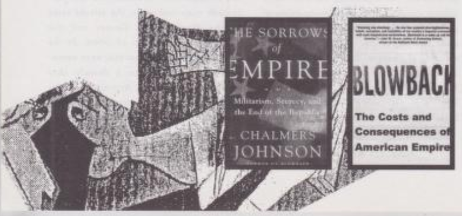

ried out clandestine activities that unquestionably generate hostility toward the United States. §
My book was written as an explicit warning to my fellow Americans of the likely consequences of their policies over the previous decade and earlier.
The warning was unheeded in the United States. The book was very well received abroad, particularly in Germany and Italy.
But it was more or less ignored here until after September 11.
What are some instances of past blowback and possible future blowback against the US?
First of all, I think the obvious thing right now is our mistaken reaction to September 11.
It became almost taboo in this country after September 11 to even ask what the motives of the attackers were.
The public has now been so confused by lies from our government that they believe Saddam Hussein was the one behind it.
We know he wasn't and, since there is no evidence that he could have been,
the people have gotten that idea only from listening to the disinformation that comes from the White House and the Pentagon. §
September 11 was not an attack on America's values or America's democracy or America's wealth.
It was an attack on American foreign policy and there were some fairly obvious things that should have been done at once which would have defused the situation.
First, we should have withdrawn the troops at once that we had based in Saudi Arabia. Since the first war with Iraq in 1991, they were just exacerbating the situation rather than serving any real function.
Second, we should have said that we do support the continuity of the state of Israel, but we do not support Israeli Zionist imperialism.
And that, until the settlements in the West Bank are closed—which are a cancer working on Israeli society in a destructive manner—we're going to cease our continued
bankrolling of Israel, both financially and militarily.
Last, we should have instituted at once a crash program of fuel conservation that could have easily eliminated our dependence on Persian Gulf petroleum imports. §
We didnt do any of those things. Instead, we set out to use our massive military power against two peculiarly puny and defenseless targets, Afghanistan and Iraq, producing untold misery.
This will, without question, generate and recruit more people committed to the idea of attacking the United States. §
The Department of Defense has said for years that nobody can meet us militarily except in one of two ways: one is the use of nuclear weapons, which would deter us;
and the other is what they call, in typical Pentagon jargon, "asymmetrical warfare," meaning the weak attacking the super-powerful via terrorism.
There is every reason to anticipate that we will have more terrorism as we increasingly sink into the two quagmires that we have created in Afghanistan and Iraq.
I think people don't understand the history of US foreign policy in other parts of the world.
Can you give us a historical thumbnail sketch of the U.S. involvement in South Korea?
It goes back to the Korean War in 1950-1953 and we've been stationed there ever since. We have over 100 military bases in South Korea.
Peace began to break out in Korea in the year 2000 when the new South Korean president,
Kim Dae-Jung— without asking permission from the United States— went north and tried to end the cold war on the Korean peninsula by opening direct negotiations with Kim Jong II's regime.
He came back after a triumph. It appeared as though, as he said in an op-ed in the
Los Angeles Times,
the chances of war on the Korean peninsula had just vanished. §
This development was extremely threatening to the American military-industrial complex and those who prof-
it from American imperialism in that part of the world. They have done everything since then to not allow peace to break out on the Korean peninsula.
With extremely belligerent remarks coming from the Bush Administration— including Bush's statement in the State of the Union address in 2002
that North Korea was part of something that he called an "axis of evil "—the North Koreans concluded that they were targeted by the United States for a violent regime change.
The massive attack on Iraq made it clear that American foreign policy was a dangerous threat, and the North Koreans concluded that the only way they could defend themselves was with the threat of nuclear weapons.
The thing that made Saddam Hussein and Iraq, is the fact that he didn't actually have any weapons of mass destruction. §
Now we have a genuine crisis. The North Koreans have begun to reprocess spent fuel rods from their reactor and convert them into plutonium. They are well on their way towards developing a nuclear arsenal.
I believe the issue can still be controlled because the surrounding nations, South Korea, Japan, and China, all recognize that North Korea's activities are essentially defensive.
It is an isolated country, a failed communist country that was buried by the conclusion of the cold war. It has no real future and it is desperately trying to dig its way out like China has done over the last 20 years. §
he chief issue is the volatility in Washington and whether or not we can make the president and his advisors to back down and assume a more reasonable position in what is clearly a negotiable situation.
The North Koreans have said they would dismantle their nuclear weapons capability in return for some guarantee that the Americans didn't intend to squash them the way they did Iraq.
They want a non- aggression treaty or at least some other public statement by the United States that it will not carry out aggression against North Korea. This has struck our allies in South Korea as utterly reasonable,
but the apathy with which the Bush administration approached this request has helped to fuel a considerable anti-American movement in South Korea at the present time.
Can you give us a thumbnail sketch of US involvement in Japan?
We created satellites in East Asia after
